GUIDA alle funzionalità di SkipperQt 2026 |
|
Proprietà: |
FARO srl via A. Volta, 9 30036 Santa Maria di Sala (VE) tel.: 041 5732533 info@farocnc.com |
Data documento |
Settembre 2026 |
I parametri si distinguono in:
Nelle finestre di dialogo che modificano i parametri del CN, le caselle sono mostrate nei colori:
Dopo aver modificato i parametri all’occorrenza:
Per saperne di più
Salvare i parametri nella memoria del CN
Quando vengono modificati dei parametri e si desidera rendere permanente tale modifica, eseguire questa procedura sul telecomando:
Per “lavorazione” si intende un file che descrive un percorso utensile in codice ISO. Il file deve avere estensione “.CNC”.
Per saperne di più
Operazioni preliminari all’invio
Avvertenza: a lavorazione iniziata, la modifica della posizione iniziale degli assi è inefficace e pericolosa.
Per inviare nuovamente l’ultima lavorazione:
oppure scegliere il file da inviare nella lista proposta nel menù a tendina.
Il file viene letto e inviato al CN, senza alcuna modifica. Il percorso utensile non viene visualizzato.
Il CN può mantenere nella propria memoria fino a 4 Mbyte; nel caso di un percorso utensile molto lungo, Skipper gestisce autonomamente la trasmissione del file.
Il numero delle righe inviate al CN e quelle eseguite è mostrato nella barra di stato.
Importante: nel caso di arresto accidentale della lavorazione, Skipper segnala il punto in cui si è arrestata la lavorazione con il messaggio:
Richiedere la ripresa della lavorazione dal numero di riga indicato.
Per inviare una sequenza di lavorazioni vedere Batch di lavorazioni.
Avvertenza: a lavorazione iniziata, la modifica della posizione iniziale degli assi XY è inefficace e pericolosa.
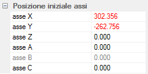
Le posizioni X Y Z sono espresse in millimetri.
Per macchine che dispongono degli assi di rotazione A B C, indicare l’angolo iniziale espresso in gradi e millesimi di grado.
La casella B non è accessibile se il CN non prevede l’uso di questo asse.
Durante la lavorazione, è possibile modificare la posizione iniziale degli assi XYZ e il valore H dello spessore del materiale con i comandi iso G54, G55 o G56. Per accedere a questi parametri:
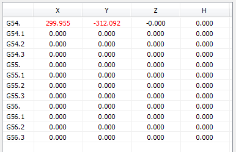
Per modificare una posizione:
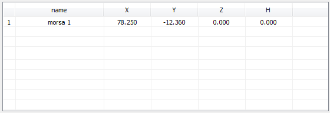
Si accede ad una lista nella quale possono essere memorizzate delle posizioni iniziali XYZ aggiuntive, ognuna associata ad un valore di spessore materiale H e individuata da un testo.
Per modificare una posizione:
Attenzione! Iniziare la procedura che segue dallo stato di ATTESA, dopo aver comandato un azzeramento degli assi.
Ogni lavorazione è sempre riferita ad una specifica origine degli assi XY; sul telecomando, seguire questa procedura:
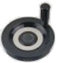
Con il volantino, muovere la punta dell’utensile esattamente sopra il punto che deve corrispondere alla posizione X=0 e Y=0;Opzioni |
||
Abilita gli assi di rotazione |
Si |
Abilita gli assi di rotazione |
Scambia gli assi A<>B |
No |
I comandi iso per l'asse A muovono l'asse B e viceversa |
Inverte il segno per l'asse A |
No |
Inverte il segno dei comandi iso per l'asse A |
Inverte il segno per l'asse B |
No |
Inverte il segno dei comandi iso per l'asse B |
Inverte il segno per l'asse C |
Si |
Inverte il segno dei comandi iso per l'asse C |
Posizione di Home |
||
A |
-0.571 |
Posizione dell'asse A dopo il ritorno a zero (homing) |
B |
-0.711 |
Posizione dell'asse B dopo il ritorno a zero (homing) |
C |
-9.591 |
Posizione dell'asse C dopo il ritorno a zero (homing) |
Centro degli assi di rotazione |
||
X |
249.302 |
Posizione dell’asse X nel centro di rotazione degli assi AB. |
Y |
-101.837 |
Posizione dell’asse Y nel centro di rotazione degli assi AB. |
Z |
109.798 |
Posizione dell’asse Z nel centro di rotazione degli assi AB. |
T7 |
0.000 |
Posizione dell’asse Z nel centro di rotazione per l'utensile in uso (T7). |
Velocità interpolata |
Si |
Modula la velocità degli assi in funzione della distanza dell’utensile in uso dal centro di rotazione. |
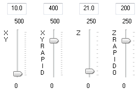
velocità XY: gli slider permettono di modificare la velocità di lavoro degli assi XY e quella in rapido. La velocità di lavoro è usata quando l’utensile è dentro il materiale; la velocità in rapido è usata nei trasferimenti sul piano di lavoro quando l’utensile é sollevato sul materiale. Le velocità sono espresse in millimetri per secondo e possono variare tra il valore minimo e massimo indicati nello slider. La velocità corrente è mostrata nella casella sovrastante lo slider. È possibile utilizzare questa casella per definire la velocità mediante un valore numerico.
NOTA: quando il percorso inviato alla macchina contiene anche le informazioni di velocità, la variazione manuale della velocità XY può risultare inefficace.
velocità Z: gli slider permettono di modificare la velocità di lavoro dell’asse Z e quella in rapido. La velocità di lavoro è usata quando l’utensile deve entrare nel materiale; la velocità in rapido è usata nei trasferimenti quando l’utensile é sollevato sul materiale.
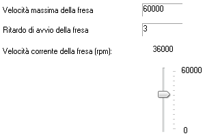
Nota: per la velocità della fresa é difficile stabilire una regola; infatti, essa deve tener conto dei seguenti fattori:
É importante ricordare che ad una velocità troppo bassa in genere corrisponde una coppia ridotta; ciò può provocare l'arresto della rotazione e la conseguente rottura dell' utensile; diversamente, una velocità della fresa troppo alta può causare la fusione del materiale e la bruciatura dell'utensile.
velocità massima: velocità massima di rotazione della fresa;
ritardo di avvio: ritardo in secondi di attesa tra l’accensione della fresa e l’inizio del movimento degli assi;
Nota: per frese ad alta frequenza è necessario attendere del tempo tra l'accensione della fresa ed il raggiungimento del numero di giri impostato: si può correre il rischio di arrivare sul materiale con una velocità di rotazione dell'utensile inadeguata, con grossi inconvenienti per l'utensile, per il materiale da lavorare e per la fresa stessa
velocità corrente: velocità corrente di rotazione della fresa in rivoluzioni per minuto (rpm).
Nota: quando il percorso utensile contiene anche l’informazione di velocità della fresa, la variazione manuale della velocità può risultare inefficace.
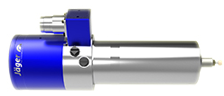
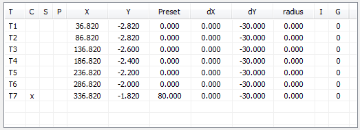
la finestra di dialogo riassume i dati per il cambio automatico degli utensili.
Il magazzino è suddiviso in “torrette”, ognuna capace di contenere un cono portautensile. Le torrette sono individuate da sinistra a destra dai codici T1,T2,…, T10.
Per ogni torretta, sono memorizzate le informazioni di:
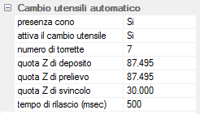 |
|
indica la presenza del cono montato sul mandrino |
|
sospende l'uso del cambio utensile |
|
numero di torrette nel magazzino utensili |
|
quota Z per il deposito del cono |
|
quota Z per il prelievo del cono |
|
quota Z di svincolo |
|
tempo di aggancio/sgancio del cono in millisecondi |
Importante
l’esecuzione del comando M6 comporta il calcolo della quota Z=0 del pezzo:
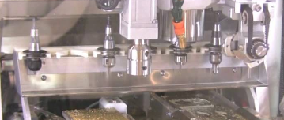
la finestra di dialogo riassume i dati associati a un mandrino multiplo.
Avvertenza: si conviene di ordinare i mandrini T1, T2, T3 e T4 da sinistra verso destra.
Importante:
abilitazione mandrini |
||
abilita T2 |
Si |
abilita l'uso del secondo mandrino (T2) |
abilita T3 |
No |
abilita l'uso del terzo mandrino (T3) |
abilita T4 |
No |
abilita l'uso del quarto mandrino (T4) |
mandrino T1 |
||
preset |
12.143 |
valore di preset per l'utensile T1 |
preset automatico |
Si |
abilita il preset automatico per l'utensile T1 |
nebulizzazione |
Si |
usa la nebulizzazione per l'utensile T1 |
nebulizzatore |
Spray liquido |
selezione del nebulizzatore per l'utensile T1 |
mandrino T2 |
||
interasse X |
72.124 |
distanza X in mm tra i mandrini T1 e T2 |
interasse Y |
0.045 |
distanza Y in mm tra i mandrini T1 e T2 |
preset |
12.143 |
valore di preset per l'utensile T2 |
preset automatico |
Si |
abilita il preset automatico per l'utensile T2 |
nebulizzazione |
Si |
usa la nebulizzazione per l'utensile T2 |
nebulizzatore |
Spray liquido |
selezione del nebulizzatore per l'utensile T2 |
mandrino T3 |
||
mandrino T4 |
Offset |
L’esecuzione del comando T99 M6 modifica la posizione iniziale della lavorazione aggiungendo i valori di Offset X e Y della diamantatrice. |
|
Offset X |
0.000 |
distanza lungo X tra il mandrino e l'utensile |
Offset Y |
131.000 |
distanza lungo Y tra il mandrino e l'utensile |
Preset utensile |
La quota Z di abbassamento sul materiale viene modificata dal valore di preset assegnato all’utensile diminuito del valore di spessore materiale |
|
preset |
90.047 |
valore di preset per utensile. acquisisce la posizione corrente dell’asse Z come nuova quota Z di preset; |
raggio |
40.000 |
raggio dell'utensile aggiorna il valore del preset utensile con il valore del raggio, |
Offset |
L’esecuzione del comando T96 M6 modifica la posizione iniziale della lavorazione aggiungendo i valori di Offset X e Y. Se il mandrino dispone del cambio utensile automatico, l’esecuzione di tale comando comporta il caricamento dell’utensile alloggiato nella torretta 7. |
|
Offset X |
-131.070 |
distanza lungo X tra il mandrino e l'utensile |
Offset Y |
11.200 |
distanza lungo Y tra il mandrino e l'utensile |
Preset utensili |
La quota Z di abbassamento sul materiale viene modificata dal valore di preset assegnato all’utensile in uso diminuito del valore di spessore materiale |
|
Utensile in uso |
98 |
Il pulsante acquisisce la posizione corrente dell’asse Z come nuova quota Z di preset secondo l’utensile in uso; |
T96 |
103.710 |
valore di preset per l'utensile T96 |
T97 |
103.313 |
valore di preset per l'utensile T97 |
T98 |
103.229 |
valore di preset per l'utensile T98 |
Posizione di cambio utensile |
||
asse X |
384.423 |
posizione dell'asse X per eseguire un cambio utensile |
asse Y |
-1.000 |
posizione dell'asse Y per eseguire un cambio utensile |
asse Z |
141.500 |
posizione dell'asse Z per eseguire un cambio utensile |
asse A |
0.000 |
posizione dell'asse A per eseguire un cambio utensile |
asse B |
0.000 |
posizione dell'asse B per eseguire un cambio utensile |
asse C |
-89.560 |
posizione dell'asse C per eseguire un cambio utensile |
Posizioni diamantatrice |
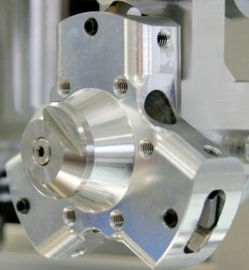 |
|
posizione verticale |
47.257 |
posizione verticale in gradi della diamantatrice |
utensile successivo |
141.000 |
distanza in gradi tra l'utensile corrente e il successivo |
utensile precedente |
117.000 |
distanza in gradi tra l'utensile corrente e il precedente |
Spessore del materiale |
Lo spessore del materiale è usato per modificare la posizione Z=0, quando cambia l’altezza del materiale da lavorare, senza dover modificare il preset di tutti gli utensili. |
|
Spessore in uso |
2.000 |
valore da sottrarre al preset utensile per modificare la posizione Z=0 |
Spessore di riferimento |
0.000 |
spessore materiale di riferimento per le funzioni batch e G54 |
Sensore di preset |
I parametri che seguono sono necessari per il calcolo automatico del preset. Tutti i valori sono espressi in mm. Se i valori di posizione XY del sensore sono entrambi nulli, il preset viene eseguito nella posizione corrente degli assi. Il pulsante acquisisce la posizione corrente degli assi XY; |
|
posizione X |
68.640 |
posizione assoluta X del sensore |
posizione Y |
-18.706 |
posizione assoluta Y del sensore |
Abbassamento Z in rapido |
75.000 |
quota Z di abbassamento in rapido sul sensore: quota Z da raggiungere in rapido durante l’abbassamento sul sensore; raggiunta questa quota, la velocità di discesa verso il sensore di contatto viene ridotta. Nel caso di valore nullo, non viene eseguito alcun movimento in rapido. |
Massima discesa Z |
108.000 |
quota Z di massimo abbassamento sul sensore; quota Z oltre la quale il preset viene interrotto con errore; |
Altezza del sensore |
16.795 |
valore da sommare alla quota Z di contatto per calcolare il preset dell’utensile in uso. IMPORTANTE: un valore di altezza del sensore errato o nullo comporta una discesa Z errata; a questo può seguire il danneggiamento del mandrino e la rottura dell’utensile. |
Spray aria |
abilita lo spray aria |
|
Preset calcolato |
ultimo valore di preset calcolato |
|
Tolleranza preset |
Differenza ammessa nel calcolo del preset utensile |
In macchina, fissare il sensore in una posizione raggiungibile con un utensile montato sul mandrino. Procedere come segue:
su Skipper, nella finestra di dialogo del Preset utensile,
Il batch è una lista di lavorazioni da eseguire in sequenza.
Il programma invia al CN il file contenente la lavorazione e i parametri ad essa associati; comanda l’avvio della lavorazione e ne attende il completamento.
I dati associati ad ogni lavorazione sono inviati al CN prima di iniziare la lavorazione.
Una eventuale condizione di allarme rilevata dal CN interrompe il batch.
Per aggiunge una nuova lavorazione alla lista:
Note:
La selezione di una lavorazione è necessaria per indicare al programma quale lavorazione deve essere modificata.
Nella lista, fare clic sulla riga che contiene la lavorazione da modificare; la riga viene mostrata in azzurro per indicare che è selezionata.
Per selezionare contemporaneamente più righe, mantenere premuto il tasto [Ctrl].
Nota: la cancellazione di una riga che contiene un file batch, implica la cancellazione di tutte le lavorazioni associate.
Nota: una riga che contiene un file batch non può essere spostata.
Nella barra degli strumenti
Nella barra degli strumenti
Per aggiunge alla lista un file batch esistente:
Le lavorazioni contenute nel file batch sono aggiunte sempre in coda alla lista.
Nota:
Per suddividere una lavorazione per utensile usato.
Il file della lavorazione deve includere più lavorazioni eseguite con utensili diversi.
Nella espansione del file vengono replicati tutti i parametri associati al file da espandere.
La posizione iniziale indica il punto del piano di lavoro XY che corrisponde al punto di coordinate X = 0, Y = 0 della lavorazione.
Nota:
Per assegnare la posizione iniziale XY scegliendo dalla tabella delle “altre posizioni iniziali”:
Lo spostamento aggiuntivo Y indica una variazione della posizione iniziale Y. Si usa quando sullo stesso materiale vengono eseguite lavorazioni distinte.
Lo spessore del materiale H indica una variazione della posizione iniziale Z.
Durante la lavorazione, questo valore viene sommato al valore di preset dell’utensile in uso per determinare la nuova posizione Z = 0 della lavorazione.
Nota:
Per ripetere una lavorazione è necessario indicare il numero di ripetizioni lungo X e lungo Y e la relativa distanza.
Nota: i parametri delle ripetizioni vengono annullati dopo l’esecuzione di ogni lavorazione.
Il CN è in grado di eseguire il rilevamento della posizione di una lastra nel piano XY e dello spessore del materiale H.
I dati di allineamento relativi ad un massimo di tre lastre sono mantenuti nel CN fino al suo spegnimento.
Per associare una lavorazione ai dati di allineamento della lastra, è necessario indicare il numero della lastra; la posizione iniziale XY e lo spessore del materiale H vengono modificati secondo i dati di allineamento.
Nota: se alla lavorazione è associato un indice di allineamento lastra, la posizione iniziale e lo spessore del materiale H dipenderanno dai dati di allineamento.
Modifica il valore dello spessore del materiale H calcolato dall’allineamento lastra.
Nel caso sia stato indicato un valore nella colonna H, questo parametro viene ignorato.
Per modificare la variazione dello spessore:
Sospendere una lavorazione permette di annullare la lavorazione senza eliminarla dalla lista.
Per sospendere una lavorazione:
Completata la lista, per avviare le lavorazioni fare clic sul pulsante .
Nella lista, viene espansa ogni eventuale lavorazione batch e viene azzerata la colonna “time”.
Al termine di ogni lavorazione, il valore “time” mostra il tempo impiegato.
Opzioni di esecuzione del batch
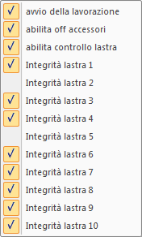
Fare clic sul pulsante per abilitare le seguenti opzioni:Fare clic sul pulsante per interrompere l’esecuzione del batch. Una lavorazione in corso viene completata.
L’esecuzione di un batch viene interrotta da ogni condizione di allarme.
La funzione MDI (Manual Data Input) consente l’esecuzione immediata di una sequenza di comandi Iso direttamente immessa dall’operatore.
Fare clic sul pulsante per comandare l’avvio del MDI; il CN passa nello stato di esecuzione.
Immettere nella casella di testo il comando iso da eseguire seguito da [INVIO]. Il comando viene aggiunto alla lista e inviato al CN che lo esegue immediatamente. Se un comando già presente nella lista deve essere ripetuto, fare doppio clic sulla riga della lista.
Fare clic sul pulsante per comandare la fine del MDI; il CN passa nello stato di ATTESA.
Fare clic sul pulsante per cancellare la lista dei comandi presente a video.
Consente di ripetere più volte una lavorazione.
Lavorazione ripetuta |
||
attiva la ripetizione |
Si |
abilita la ripetizione della lavorazione |
contatore di lavorazioni |
15 |
numero di lavorazioni completate |
numero max di lavorazioni |
0 |
numero massimo di lavorazioni, se diverso da 0 |
Pausa dopo la lavorazione |
||
richiesta di pausa |
Si |
esegue una pausa al termine di ogni lavorazione |
Posizione di pausa |
||
asse X |
Si |
posizione dell'asse X in pausa |
asse Y |
No |
posizione dell'asse Y in pausa |
asse Z |
No |
posizione dell'asse Z in pausa |
valori relativi |
No |
se valori di posizione sono relativi alla posizione 0 del pezzo |
Ripetizioni nel piano |
consentono di ripetere più volte una lavorazione disponendola a intervalli regolari nel piano XY. |
|
abilita le ripetizioni |
Si |
abilita le ripetizioni nel piano XY |
prima ripetizione |
1 |
numero della prima ripetizione da eseguire |
Ripetizioni lungo X |
||
n.ro di ripetizioni |
3 |
numero delle lavorazioni da disporre lungo X |
distanza |
45 |
distanza in X tra una lavorazione e la successiva |
Ripetizioni lungo Y |
||
n.ro di ripetizioni |
3 |
numero delle lavorazioni da disporre lungo Y |
distanza |
60 |
distanza in Y tra una lavorazione e la successiva |
Z di sicurezza |
||
quota Z di sicurezza |
2.000 |
quota Z di sicurezza tra una lavorazione e la successiva |
L’allineamento della lastra rileva la posizione iniziale XY e Z da associare ad una successiva lavorazione, correggendo eventuali errori di posizionamento del materiale.
Prima della lavorazione, Il CN deve rilevare la posizione XY di due fori presenti nella lastra e la quota Z di contatto.
La posizione rilevata del primo foro diventa la nuova posizione iniziale XY per la successiva lavorazione.
Dalla posizione rilevata del secondo foro, viene calcolata la rotazione da applicare alla lavorazione per compensare l’eventuale posizionamento errato della lastra.
La quota Z di contatto corregge la posizione iniziale Z.
Quanto sopra presuppone che le geometrie e le relative lavorazioni siano state create rispetto al centro del primo foro.
Selezione della lastra |
||
lastra numero |
1 |
indica il numero della lastra(1-2-3) |
posizione G del primo foro |
G54 |
selezione della posizione predefinita G. La G54 deve indicare la posizione assoluta XY del primo foro e la quota Z di abbassamento in rapido sul materiale. |
distanza secondo foro |
80 |
distanza in Y del secondo foro |
distanza X punto di tastatura |
-10.000 |
distanza in X del punto di tastatura H |
distanza Y punto di tastatura |
0.000 |
distanza in Y del punto di tastatura H |
Posizione del primo foro |
||
X |
0.000 |
posizione assoluta X del primo foro |
Y |
0.000 |
posizione assoluta Y del primo foro |
Posizione del secondo foro |
||
X |
0.000 |
posizione assoluta X del secondo foro |
Y |
0.000 |
posizione assoluta y del secondo foro |
Posizione di tastatura |
||
X |
0.000 |
posizione assoluta X del punto di tastatura H |
Y |
0.000 |
posizione assoluta Y del punto di tastatura H |
Z |
0.000 |
quota Z di abbassamento in rapido |
Per definire i dati di allineamento lastra:
eseguire un allineamento
creare un file cnc di allineamento
La mappatura di una lastra nel piano XY è usata per aggiustare la profondità Z di una successiva lavorazione su materiale di spessore irregolare.
Per eseguire una mappatura è necessario indicare l’area da mappare, la risoluzione XY e la quota di abbassamento Z in rapido.
Eseguita la mappatura, la successiva lavorazione viene corretta in Z secondo le quote mappate.
Selezione della lastra |
nel file utente possono essere salvati i dati di mappatura di 3 lastre; |
|
lastra numero |
1 |
indica il numero della lastra(1-2-3) |
Posizione iniziale |
angolo in basso a sinistra della lastra clic sui pulsanti per acquisire la posizione xy direttamente dal CN; |
|
X |
35.000 |
posizione X del primo estremo |
Y |
-378.00 |
posizione Y del primo estremo |
Posizione finale |
angolo in alto a destra della lastra |
|
X |
235.000 |
posizione X del secondo estremo |
Y |
-278.00 |
posizione Y del secondo estremo |
Posizione Z |
||
Z |
120.000 |
quota Z di abbassamento in rapido; Nota Se il tastatore contatta la lastra durante l’abbassamento Z in rapido, la mappatura viene terminata con errore. Se il tastatore non contatta la lastra entro 20 mm successivi all’abbassamento Z in rapido, la mappatura viene terminata con errore. |
Risoluzione |
la risoluzione XY, ovvero la distanza tra una tastatura e la successiva, applicata alla dimensione dell’area di mappatura, determina il numero di punti da mappare con un limite massimo di 1500 punti. |
|
5.000 |
risoluzione XY di mappatura |
|
850 |
numero di punti di mappatura (max. 1500) |
eseguire una mappatura
creare un file cnc di mappatura
Questo manuale tecnico descrive nel dettaglio i comandi disponibili nel linguaggio di scripting utilizzabile all’interno della funzionalità Batch di Lavorazione del software Skipper.
Lo scripting batch rappresenta uno strumento avanzato, progettato per automatizzare, personalizzare e ottimizzare i processi di lavorazione e misura. Attraverso comandi semplici e intuitivi, consente di definire sequenze operative complesse, anche condizionate, migliorando l’efficienza e la coerenza delle lavorazioni.
Una delle potenzialità più rilevanti dello scripting è l’accesso diretto ai parametri macchina, che permette non solo di modificarli dinamicamente, ma anche di costruire routine automatiche di autocalibrazione tramite l’impiego dei tastatori integrati.
Nel corso del documento verranno presentati tutti i comandi disponibili, con la relativa sintassi, descrizione funzionale ed esempi pratici di utilizzo, organizzati in sezioni tematiche per facilitarne la consultazione.
Il linguaggio di scripting utilizzato nella modalità Batch di Lavorazione del software Skipper si ispira al linguaggio JavaScript, di cui mantiene i comandi e i costrutti fondamentali. Questa scelta rende il linguaggio immediatamente familiare a chi ha già esperienza con ambienti di scripting moderni.
La sintassi è case-sensitive e segue una struttura libera basata su blocchi delimitati da parentesi graffe ({}), con istruzioni che terminano opzionalmente con punto e virgola (;), come in JavaScript.
Sono supportati tutti i principali costrutti di controllo di flusso (if, while, for, switch), nonché la definizione di funzioni personalizzate e l’uso di variabili locali e globali.
Oltre alle funzionalità standard del linguaggio, lo scripting batch include un insieme di estensioni specifiche per l’integrazione diretta con l’ambiente Skipper:
I commenti seguono la sintassi JavaScript:
// Commento su una riga
/*
Commento su più righe
*/
Nel linguaggio di scripting utilizzato da Skipper, tutte le variabili vengono dichiarate utilizzando la parola chiave var. Questo approccio, mutuato da JavaScript, consente di creare variabili in modo semplice e flessibile, senza dover specificare esplicitamente il tipo di dato.
Le variabili possono essere dichiarate e inizializzate nella stessa istruzione:
var velocità = 1500;
var messaggio = "Inizio lavorazione";
var eseguiControllo = true;
È anche possibile dichiarare una variabile senza inizializzarla:
var risultato;
In tal caso, la variabile avrà valore undefined fino a quando non verrà assegnato un valore esplicito.
Anche se non è necessario specificare il tipo, le variabili possono contenere diversi tipi di dato:
Le variabili dichiarate con var possono essere riassegnate in qualsiasi punto dello script:
var quota = 10;
quota = quota + 5;
Tutte le variabili dichiarate con var hanno ambito di funzione o globale, a seconda del punto in cui sono definite:
var globale = 100;
function esempio() {
var locale = 50;
log("Variabile locale: " + locale);
}
log("Variabile globale: " + globale);
Nota: si consiglia di evitare conflitti di nomi tra variabili locali e globali per prevenire comportamenti inattesi.
Il linguaggio di scripting della modalità batch di Skipper supporta un insieme di operatori standard, simili a quelli presenti in JavaScript, che permettono di costruire espressioni logiche, matematiche e di confronto. Questi operatori sono essenziali per implementare condizioni, calcoli e decisioni all'interno degli script.
Gli operatori aritmetici permettono di eseguire operazioni matematiche su valori numerici.
Operatore |
Descrizione |
Esempio |
|---|---|---|
+ |
Addizione |
var somma = a + b; |
- |
Sottrazione |
var diff = a - b; |
* |
Moltiplicazione |
var prod = a * b; |
/ |
Divisione |
var div = a / b; |
% |
Modulo (resto) |
var resto = a % b; |
Nota: La divisione tra interi restituisce comunque un valore decimale se necessario.
Utilizzati nelle condizioni (if, while, ecc.), servono per confrontare valori.
Operatore |
Descrizione |
Esempio |
|---|---|---|
== |
Uguaglianza (valore) |
a == b |
!= |
Diverso |
a != b |
> |
Maggiore |
a > b |
< |
Minore |
a < b |
>= |
Maggiore o uguale |
a >= b |
<= |
Minore o uguale |
a <= b |
Nota: L'operatore == verifica solo il valore, non il tipo
Permettono di combinare condizioni booleane.
Operatore |
Descrizione |
Esempio |
|---|---|---|
&& |
AND logico |
a > 0 && b < 10 |
! |
NOT logico |
!(a > 100) |
L’assegnazione viene fatta con l’operatore =. Sono disponibili anche versioni combinate con operatori aritmetici.
Operatore |
Descrizione |
Esempio |
|---|---|---|
= |
Assegnazione semplice |
x = 5; |
+= |
Addizione e assegnazione |
x += 2; (equivale a x = x + 2) |
-= |
Sottrazione e assegnazione |
x -= 1; (equivale a x = x - 1) |
*= |
Moltiplicazione e assegnazione |
x *= 3; (equivale a x = x * 3) |
/= |
Divisione e assegnazione |
x /= 4; (equivale a x = x / 4) |
L’operatore + può essere usato anche per unire due stringhe:
var messaggio = "Quota attuale: " + quota;
Se uno degli operandi è una stringa, l’altro verrà convertito automaticamente in testo
Le strutture di controllo consentono di gestire il flusso di esecuzione dello script in base a condizioni o ripetizioni. Il linguaggio batch di Skipper supporta le principali strutture tipiche della programmazione imperativa, ereditate da JavaScript.
Le istruzioni condizionali permettono di eseguire blocchi di codice solo se una determinata condizione è verificata.
if, else if, else
var quota = 15;
if (quota > 20) {
log("Quota troppo alta");
} else if (quota >= 10) {
log("Quota corretta");
} else {
log("Quota troppo bassa");
}
Uso del ! (NOT logico)
var tastatoreAttivo = false;
if (!tastatoreAttivo) {
attivaTastatore();
}
I cicli permettono di eseguire una stessa porzione di codice più volte, finché una condizione è vera o per un numero definito di iterazioni.
for
for (var i = 0; i < 5; i++) {
log("Iterazione " + i);
}
while
var quota = 0;
while (quota < 10) {
quota += 2;
log("Quota attuale: " + quota);
}
do...while
var tentativi = 0;
do {
log("Tentativo: " + tentativi);
tentativi++;
} while (tentativi < 3);
Interrompe l’esecuzione del ciclo corrente:
for (var i = 0; i < 10; i++) {
if (i == 5) break;
log("i = " + i);
}
Salta l’iterazione corrente e passa alla successiva:
for (var i = 0; i < 5; i++) {
if (i == 2) continue;
log("Valore: " + i);
}
Il costrutto switch permette di eseguire blocchi diversi di codice in base al valore di una variabile o di un'espressione. È utile quando si devono gestire più condizioni in modo compatto e leggibile.
Sintassi base:
var codiceErrore = 2;
switch (codiceErrore) {
case 1:
log("Errore di inizializzazione");
break;
case 2:
log("Errore di connessione");
break;
case 3:
log("Errore di misura");
break;
default:
log("Errore sconosciuto");
break;
}
Nota: lo switch è particolarmente utile quando si leggono parametri macchina che possono assumere uno tra più stati distinti e noti.
Le funzioni permettono di raggruppare blocchi di codice riutilizzabili, migliorando la leggibilità, la modularità e la manutenzione dello script. Come in JavaScript, le funzioni possono ricevere parametri in ingresso e restituire un valore in uscita.
Le funzioni vengono dichiarate utilizzando la parola chiave function, seguita dal nome della funzione, una lista di parametri tra parentesi tonde e un blocco di codice tra parentesi graffe.
Sintassi:
function nomeFunzione(param1, param2) {
// corpo della funzione
return risultato;
}
Esempio:
function somma(a, b) {
return a + b;
}
var risultato = somma(5, 3); // risultato = 8
È buona pratica usare funzioni per suddividere lo script in unità logiche distinte, ad esempio per operazioni ricorrenti o per isolare logiche condizionali complesse.
Esempio di funzione per verifica quota:
function verificaQuota(quota) {
if (quota < 10) {
log("Quota troppo bassa");
} else if (quota > 50) {
log("Quota troppo alta");
} else {
log("Quota OK");
}
}
Oltre alle funzioni definite dall’utente, lo scripting batch di Skipper mette a disposizione un insieme di funzioni predefinite per eseguire operazioni specifiche, come:
Nota: L'elenco completo delle funzioni macchina disponibili è riportato nella sezione dedicata ai comandi specifici di Skipper.
Le variabili dichiarate dentro una funzione con var hanno ambito locale e non sono accessibili dall’esterno:
function esempio() {
var locale = 42;
log("Locale: " + locale);
}
esempio();
// log(locale); // Errore: locale non è definita fuori dalla funzione
In questa sezione vengono descritti i parametri macchina e i comandi specifici che possono essere utilizzati all’interno dello scripting batch di Skipper. Questi strumenti consentono di interagire direttamente con i componenti hardware e software della macchina, permettendo la lettura e la modifica dei parametri di configurazione, l'esecuzione di operazioni automatiche e l'interazione con le funzionalità avanzate di Skipper.
I parametri macchina comprendono valori come la posizione delle origini, posizioni correnti degli assi, parametri degli accessori, e molte altre informazioni cruciali per il controllo e la gestione della macchina. I comandi specifici permettono di eseguire azioni come il caricamento di un file cnc, la richiesta di punti di tastatura, la gestione degli allarmi, ecc.
In Skipper, i parametri macchina sono organizzati in namespace. Un namespace è un identificatore gerarchico che permette di strutturare i parametri in modo logico e facilmente accessibile, raggruppandoli in categorie specifiche. Ogni namespace rappresenta una sezione o una funzionalità della macchina, e i parametri specifici di quella sezione possono essere letti o modificati tramite il percorso completo del namespace.
I namespace sono organizzati come una serie di chiavi separate da punti (.). Ogni chiave rappresenta un livello gerarchico e consente di accedere a parametri specifici all'interno di quella sezione. Per convenzione i namespace sono CameCase (prima lettera di ogni parola in maiuscolo), mentre i parametri finali dromedaryCase (prima lettera minuscola, maiuscola tra le parole interne).
Ad esempio, un parametro come Machine.Parameters.G54[0].x indica che si sta accedendo al valore della coordinata x dell'origine predefinita G54 della macchina, sotto la sezione Machine.Parameters.
Per leggere un parametro, è sufficiente specificare il namespace completo della variabile desiderata. Ecco come accedere al valore di un parametro:
var posizioneX = Machine.Parameters.G54[0].x;
log("Posizione X: " + posizioneX);
In questo esempio, il valore della coordinata x dell'origine viene letto dal parametro e assegnato alla variabile posizioneX.
Per modificare un parametro, si utilizza una sintassi simile a quella dell'accesso, ma associando il valore desiderato al parametro specificato. Ecco un esempio di modifica:
Machine.Parameters.G54[0].x = 100; // Imposta la coordinata X dell'origine a 100
log("Nuova posizione X: " + Machine.Parameters.G54[0].x);
In questo caso, la posizione x dell'origine viene impostata a 100.
Oltre ai parametri della macchina, ci sono anche variabili predefinite che possono essere utilizzate per ottenere informazioni sullo stato del sistema, come ad esempio:
Tutti i parametri macchina sono raggruppati nel namespace Machine.Parameters che, di conseguenza, va anteposto al nome dei parametri qui elencati
Nel linguaggio di scripting di Skipper, il namespace Parameters.Axis consente di accedere ai parametri degli assi. Ogni asse della macchina è rappresentato da un proprio namespace secondario, che contiene i parametri relativi a quel particolare asse.
Ad esempio, l’offset di home dell’asse A può essere ottenuta attraverso il namespace Axis.A.homeOffset
Sintassi di accesso:
// Imposta la 0 la posizione di offset di home dell’asse A
Axis.A.homeOffset = 0;
Nome |
Tipo |
Descrizione |
homeOffset |
Numerico |
Offset di home dell’asse |
rotationOffset |
Numerico |
Posizione di home asse di rotazione, presente solo su assi di rotazione ABC… |
Il namespace Machine.Parameters.Blade raccoglie i parametri relativi all’accessorio lama da taglio
Nome |
Tipo |
Descrizione |
offsetX |
Numerico |
Offset X rispetto al mandrino (T1) |
offsetY |
Numerico |
Offset Y rispetto al mandrino (T1) |
preset |
Numerico |
Preset della lama |
disableDevice |
Booleano |
Consente di disabilitare l’accessorio, mascherando gli allarmi |
enableCorrection |
Booleano |
Abilita la compensazione automatica dell’eccentricità della lama nell’asse di orientamento C |
eccentricityX |
Numerico |
Valore di eccentricità X |
eccentricityY |
Numerico |
Valore di eccentricità Y |
bladeCycles |
Intero |
Contatore del numero di cicli eseguiti dalla lama |
maxBladeCycles |
Intero |
Massimo numeri di cicli consentiti prima di segnalare l’allarme fine vita lama |
Questo namespace raggruppa i parametri di velocità predefinite, utilizzate nei movimenti rapidi o di taglio in assenza di comandi di velocità F.
Parametri di velocità nei movimenti in lavorazione G1, G2, G3, …
Nome |
Tipo |
Descrizione |
common |
Numerico |
Velocità comune in lavorazione degli assi diversi da Z espresso in unità al secondo |
z |
Numerico |
Velocità specifica per l’asse Z per i movimenti in lavorazione, espressa in mm/s |
Parametri di velocità nei movimenti in rapido G0
Nome |
Tipo |
Descrizione |
common |
Numerico |
Velocità comune in rapido degli assi diversi da Z espresso in unità al secondo |
z |
Numerico |
Velocità specifica per l’asse Z per i movimenti in rapido, espressa in mm/s |
Le origini predefinite, come G54, G55, G56, sono utilizzate nel linguaggio ISO per definire diverse posizioni di riferimento durante la lavorazione CNC. Ogni origine predefinita può includere fino a quattro posizioni (ad esempio, G54, G54.1, G54.2, G54.3), che corrispondono a differenti riferimenti spaziali, come le coordinate X, Y, Z e lo spessore del materiale.
Nel linguaggio di scripting le varianti di ciascun comando di orgine (ad esempio, G54, G54.1, G54.2, G54.3) sono indicizzate come elementi di un array, dove il numero dopo il punto rappresenta l'indice del vettore.
Esempio:
Nome |
Tipo |
Descrizione |
|
x |
Numerico |
Posizione X |
|
y |
Numerico |
Posizione Y |
|
z |
Numerico |
Posizione Z |
|
h |
Numerico |
Spessore del materiale che varia la quota Z=0 di lavorazione |
|
a |
Numerico |
Posizione A |
Solo su FW FDC da 20251110 |
b |
Numerico |
Posizione B |
Solo su FW FDC da 20251110 |
c |
Numerico |
Posizione C |
Solo su FW FDC da 20251110 |
v |
Numerico |
Posizione V |
Solo su FW FDC da 20251110 |
w |
Numerico |
Posizione W |
Solo su FW FDC da 20251110 |
u |
Numerico |
Posizione U |
Solo su FW FDC da 20251110 |
Questa struttura consente di accedere facilmente alle diverse posizioni di origine in modo semplice e ordinato, utilizzando l’indice appropriato per ciascuna.
// Accesso alla coordinata X di G54.2
var xG542 = G54[2].x;
In questo esempio, G54[2] rappresenta la terza posizione dell'origine G54 (G54.2), e x accede alla coordinata X di quella posizione.
ll namespace Machine.Parameters.Kinematics raggruppa i parametri per il settaggio della cinematica macchina
Identifica i parametri utilizzati per abilitare e configurare la modulazione della velocità di avanzamento su macchina a 5 assi, una funzionalità fondamentale per il mantenimento corretto della velocità utensile-materiale.
Nome |
Tipo |
Descrizione |
enable |
Booleano |
Abilitazione della modulazione di velocità |
centerX |
Numerico |
Posizione X del centro di rotazione della macchina |
centerY |
Numerico |
Posizione Y del centro di rotazione della macchina |
centerZ |
Numerico |
Posizione Z del centro di rotazione della macchina |
Il namespace LensClamp consente di gestire i parametri relativi alla multilavorazione, una funzione che abilita la ripetizione automatica e ciclica del file CNC caricato nella macchina. Questa opzione è utile quando si desidera eseguire lo stesso programma CNC più volte senza doverlo far ripartire manualmente, ottimizzando il processo produttivo.
Nel linguaggio di scripting, è possibile specificare vari parametri per la multilavorazione, come il numero massimo di cicli da eseguire o, in alternativa, abilitare la ripetizione illimitata del ciclo.
Nome |
Tipo |
Descrizione |
enable |
Booleano |
Abilita o disabilita la multilavorazione |
maxCycles |
Intero |
Numero massimo di ripetizioni, indicare 0 per ripetizioni illimitate |
completedCycles |
Intero |
Numero di ripetizioni del ciclo completate finora |
Sintassi di accesso e configurazione:
//Abilitare la multilavorazione
Machine.Multi.enable = true;
//Impostare un numero massimo di ripetizioni a 10
Machine.Multi.maxCycles = 10;
//Azzerare il contatore ripetizioni
Machine.Multi.completedCycles = 0;
Il namespace Multi consente di gestire i parametri relativi alla multilavorazione, una funzione che abilita la ripetizione automatica e ciclica del file CNC caricato nella macchina. Questa opzione è utile quando si desidera eseguire lo stesso programma CNC più volte senza doverlo far ripartire manualmente, ottimizzando il processo produttivo.
Nel linguaggio di scripting, è possibile specificare vari parametri per la multilavorazione, come il numero massimo di cicli da eseguire o, in alternativa, abilitare la ripetizione illimitata del ciclo.
Nome |
Tipo |
Descrizione |
enable |
Booleano |
Abilita o disabilita la multilavorazione |
maxCycles |
Intero |
Numero massimo di ripetizioni, indicare 0 per ripetizioni illimitate |
completedCycles |
Intero |
Numero di ripetizioni del ciclo completate finora |
Sintassi di accesso e configurazione:
//Abilitare la multilavorazione
Machine.Multi.enable = true;
//Impostare un numero massimo di ripetizioni a 10
Machine.Multi.maxCycles = 10;
//Azzerare il contatore ripetizioni
Machine.Multi.completedCycles = 0;
Il namespace Machine.Parameters.MultiSpindle raccoglie i parametri relativi alla configurazione multimandrino.
Nome |
Tipo |
Descrizione |
offsetX |
Numerico |
Offset X rispetto al mandrino (T1) |
offsetY |
Numerico |
Offset Y rispetto al mandrino (T1) |
preset |
Numerico |
Preset del mandrino |
Origine correntemente in uso nella macchina, rispetto alla quale sono riferite le posizioni relative degli assi
Nome |
Tipo |
Descrizione |
x |
Numerico |
Posizione X |
y |
Numerico |
Posizione Y |
z |
Numerico |
Posizione Z |
a |
Numerico |
Posizione A |
b |
Numerico |
Posizione B |
c |
Numerico |
Posizione C |
v |
Numerico |
Posizione V |
w |
Numerico |
Posizione W |
u |
Numerico |
Posizione U |
h |
Numerico |
Spessore del materiale che varia la quota Z=0 di lavorazione |
Il namespace Machine.Parameters. PresetSensor raccoglie i parametri relativi al dispositivo preset per la misurazione della lunghezza utensili.
Posizione del sensore in coordinate macchina
Nome |
Tipo |
Descrizione |
x |
Numerico |
Posizione X del sensore |
y |
Numerico |
Posizione Y del sensore |
z |
Numerico |
Posizione Z di avvicinamento al sensore |
limit |
Numerico |
Posizione Z limite di ricerca sensore |
h |
Numerico |
Altezza del sensore di preset |
Ultima misura in mm effettuata durante l’operazione di preset di un utensile
Nome |
Tipo |
Descrizione |
lastMeasure |
Numerico |
Ultima misura in mm effettuata durante l’operazione di preset di un utensile |
Il namespace Machine.Parameters.Probe3D raccoglie i parametri relativi al tastatore 3D, uno strumento utilizzato per operazioni di misura, calibrazione automatica e rilevamento di superfici o riferimenti pezzo. I parametri disponibili consentono di definire la posizione fisica del tastatore rispetto al mandrino e il preset.
Nome |
Tipo |
Descrizione |
offsetX |
Numerico |
Offset X rispetto al mandrino (T1) |
offsetY |
Numerico |
Offset Y rispetto al mandrino (T1) |
preset |
Numerico |
Preset del tastatore |
Il namespace Machine.Parameters.LinearGauge raccoglie i parametri relativi al tastatore calibro lineare, uno strumento utilizzato per operazioni di misura, calibrazione automatica e rilevamento di superfici o riferimenti pezzo. I parametri disponibili consentono di definire la posizione fisica del tastatore rispetto al mandrino e il preset.
Nome |
Tipo |
Descrizione |
offsetX |
Numerico |
Offset X rispetto al mandrino (T1) |
offsetY |
Numerico |
Offset Y rispetto al mandrino (T1) |
preset |
Numerico |
Preset del tastatore |
Il namespace Machine.Parameters.LinearGauge.AutomaticPreset raccoglie i parametri relativi alla funzionalità di preset automatico calibro lineare
Nome |
Tipo |
Descrizione |
enable |
Booleano |
Abilita la funzionalità di preset automatico |
x |
Numerico |
Posizione X del sensore |
y |
Numerico |
Posizione Y del sensore |
a |
Numerico |
Posizione A del sensore (se asse presente) |
b |
Numerico |
Posizione B del sensore (se asse presente) |
z |
Numerico |
Posizione Z di avvicinamento al sensore |
limit |
Numerico |
Posizione Z limite di ricerca sensore |
h |
Numerico |
Altezza del sensore di preset |
Il namespace Machine.Parameters.LensGauge raccoglie i parametri relativi al tastatore lenti. I parametri disponibili consentono di definire la posizione fisica del tastatore rispetto al mandrino e il preset.
Nome |
Tipo |
Descrizione |
offsetX |
Numerico |
Offset X rispetto al mandrino (T1) |
offsetY |
Numerico |
Offset Y rispetto al mandrino (T1) |
preset |
Numerico |
Preset del tastatore |
readOffset1 |
Numerico |
Offset lettura compressione del tastatore 1 (superiore o front) |
readOffset2 |
Numerico |
Offset lettura compressione del tastatore 2 (inferiore o back) |
Raggruppa le impostazioni della macchina
In Skipper, è possibile modificare la velocità di avanzamento della macchina tramite un override percentuale. Questo parametro permette di regolare la velocità di esecuzione delle operazioni senza dover modificare i valori di velocità definiti nel programma CNC, consentendo un controllo dinamico e flessibile durante la lavorazione. Il parametro startupFeedrateOverride consente di forzare l’override ad un determinato valore all’avvio del ciclo di lavorazione.
Il namespace Machine.Parameters.SpindleTilting raccoglie i parametri relativi al dispositivo di inclinazione (tilting) del mandrino.
Nome |
Tipo |
Descrizione |
offsetX |
Numerico |
Offset X del centro di rotazione rispetto al mandrino (T1) |
offsetY |
Numerico |
Offset Y del centro di rotazione rispetto al mandrino (T1) |
offsetZ |
Numerico |
Posizione Z del centro rotazione rispetto il piano Z0 |
Il namespace Machine.Parameters.Vision raccoglie i parametri relativi all’accessorio camera per visione in macchina
Nome |
Tipo |
Descrizione |
offsetX |
Numerico |
Offset X rispetto al mandrino (T1) |
offsetY |
Numerico |
Offset Y rispetto al mandrino (T1) |
preset |
Numerico |
Preset della camera (definisce la distanza focale) |
Tutte le variabili di stato macchina sono raggruppate nel namespace Machine.Status che, di conseguenza, va anteposto al nome dei parametri qui elencati
In Skipper, è possibile modificare la velocità di avanzamento della macchina tramite un override percentuale. Questo parametro permette di regolare la velocità di esecuzione delle operazioni senza dover modificare i valori di velocità definiti nel programma CNC, consentendo un controllo dinamico e flessibile durante la lavorazione.
Nel linguaggio di scripting, l'override della velocità di avanzamento è rappresentato dalla variabile Machine.Status.feedrateOverride, che consente di accedere e modificare il valore percentuale dell'override attivo. Un valore di 100% corrisponde alla velocità nominale definita nel programma, mentre valori superiori o inferiori permettono di accelerare o rallentare la macchina.
Nome |
Tipo |
Descrizione |
feedrateOverride |
Intero |
Percentuale dell’override nell’intervallo 0; 200 |
Sintassi di accesso:
// Impostare l'override della velocità al 120% (velocità aumentata del 20%)
Machine.Status.feedrateOverride = 120;
// Leggere il valore dell'override della velocità
var velocitaOverride = Machine.Status.feedrateOverride;
log("Velocità di avanzamento impostata al " + velocitaOverride + "%");
In questo esempio, il valore di Machine.Status.feedrateOverride viene impostato al 120%, aumentando così la velocità di avanzamento della macchina del 20%.
Nel linguaggio di scripting di Skipper, il namespace Machine.Status.Axis consente di accedere ai valori correnti degli assi, come le posizioni comandate e le posizioni effettive lette dagli encoder. Ogni asse della macchina è rappresentato da un proprio namespace secondario, che contiene i valori relativi a quel particolare asse.
Ad esempio, la posizione assoluta di un asse X può essere ottenuta attraverso il namespace Machine.Status.Axis.X.absolutePosition, che rappresenta la posizione fisica dell'asse X rispetto al sistema di riferimento della macchina.
Sintassi di accesso:
// Leggere la posizione assoluta dell'asse X
var posizioneX = Machine.Status.Axis.X.absolutePosition;
log("Posizione assoluta dell'asse X: " + posizioneX);
Ciascun asse definisce le seguenti variabili in sola lettura
Nome |
Tipo |
Descrizione |
absolutePosition |
Numerico |
Posizione assoluta dell’asse in coordinate macchina e riferite alla posizione di Home |
relativePosition |
Numerico |
Posizione dell’asse relativa all’origine corrente |
encoderPosition |
Numerico |
Posizione dell’asse determinata dall’encoder (dove presente) |
Tutte le variabili informative sono raggruppate nel namespace Machine.Info che, di conseguenza, va anteposto al nome dei parametri qui elencati
Nome |
Tipo |
Descrizione |
serialNumber |
Stringa |
Numero di serie della macchina nel formato “COMET-XXXXX” |
Nome |
Tipo |
Descrizione |
controlBoardType |
Stringa |
Tipologia di scheda CN di controllo. Può assumere i valori: FW_FDC, FW_SCNC_C17, FW_SCNC_C14, FW_UNKNOWN |
Nome |
Tipo |
Descrizione |
firmwareVersion |
Stringa |
Versione del firmware della scheda CN |
Il namespace Machine.Functions raccoglie un insieme di funzioni operative che consentono di eseguire comandi diretti sulla macchina CNC. Queste funzioni permettono di interagire in modo attivo con il controllo, gestendo operazioni comuni come il caricamento dei file di lavorazione, l’avvio o l’interruzione dei cicli, il salvataggio dei parametri e la gestione degli stati macchina.
Queste funzioni sono particolarmente utili nello scripting batch, dove è possibile automatizzare intere sequenze di lavoro, inserire logiche condizionali e programmare cicli personalizzati.
Richiede l’avvio del ciclo macchina, equivalente alla pressione del pulsante Start
Parametri
Valore di ritorno: true se l’operazione si è completata con successo, false in caso di errore o timeout
Attende il completamento del ciclo macchina corrente e il passaggio allo stato di attesa o di errore.
Parametri
Valore di ritorno: true se l’operazione si è completata con successo, false in caso di errore o timeout
Richiede il passaggio allo stato di Jog, controllo manuale degli assi.
Parametri
Valore di ritorno: true se l’operazione si è completata con successo, false in caso di errore o timeout
Se la macchina è in ciclo (stato di Run) richiede il passaggio allo stato di pausa.
Parametri
Valore di ritorno: true se l’operazione si è completata con successo, false in caso di errore o timeout
Richiede l’homing della macchina.
Parametri
Valore di ritorno: true se l’operazione si è completata con successo, false in caso di errore o timeout
Effettua un movimento Jog alle posizioni assolute indicate.
Parametri
Eccezioni
Richiede il salvataggio parametri nella memoria permanente della macchina
Eccezioni
Richiede il riavvio del firmware macchina (soft-reset)
Parametri
Valore di ritorno: true se l’operazione si è completata con successo, false in caso di errore o timeout
Attende la perdita di connessione con la macchina per il massimo tempo indicato
Parametri
Valore di ritorno: true se l’operazione si è completata con successo, false in caso di errore o timeout
Attende la riconnessione alla macchina per il massimo tempo indicato
Parametri
Valore di ritorno: true se l’operazione si è completata con successo, false in caso di errore o timeout
Richiede il preset dell’utensile specificato
Parametri
Valore di ritorno: true se l’operazione si è completata con successo, false in caso di errore o timeout
Richiede i valori del punto di tastatura di indice specificato
Parametri
Valore di ritorno: ProbePoint di indice richiesto
Richiede i valori del punto di visione di indice specificato
Parametri
Valore di ritorno: VisionPoint di indice richiesto
Cancella la memoria ISO della macchina
Eccezioni
Inizia il caricamento del file avente il percorso specificato
Parametri
Inizia il caricamento del file ISO specificato come contenuto
Parametri
Inizia il caricamento del firmware avente il percorso specificato
Parametri
Crea un backup della configurazione completa della macchina nella cartella backup di Skipper. La cartella macchina in Skipper non viene modificata
Scarica parametri, sottoprogrammi e reference aggiornando i file corrispondenti nella cartella macchina di Skipper
Salva i parametri correnti nel file utente della macchina, lasciando inalterati i file reference e sottoprogrammi
Il namespace Batch racchiude le funzioni di accesso alla batch in esecuzione
Esegue un refresh del pannello Batch
Ritorna un elemento di tipo BatchItem associato alla riga batch specificata
Ritorna un elemento di tipo BatchItem associato all’indice specificato. L’indice di un elemento corrisponde al numero riga – 1
Cerca un elemento di tipo BatchItem avente il nome specificato. Ritorna il primo trovato per ordine di riga oppure un elemento invalido se non trovato.
Comanda l’arresto dell’esecuzione della batch
Imposta il prossimo elemento batch che sarà eseguito dalla batch. Questa funzione permette si cambiare il flusso di esecuzione effettuando dei salti ad una riga particolare identificata dal riferimento all’elemento. Lo script continua la propria esecuzione fino al termine, quindi la batch prosegue dall’elemento indicato. Successivamente l’esecuzione prosegue con l’elemento successivo a nextItem.
Inserisce il file specificato per percorso assoluto o relativo in coda alla batch
Inserisce il file specificato per percorso assoluto o relativo in coda all’elemento parent specificato, se possibile, altrimenti in posizione immediatamente successiva
Inserisce all’indice indicato il file specificato per percorso assoluto o relativo. Se targetIndex=-1 o è superiore al numero di elementi della batch aggiunge l’elemento alla fine della batch, al livello 0. Se targetIndex è un elemento esistente della batch, inserisce il nuovo elemento allo stesso livello di targetIndex, spostando l’elemento esistente in basso di una posizione.
Rimuove l’elemento specificato tramite indice. Ritorna true se l’elemento è esistente, false altrimenti.
Azzera il contatore ripetizioni dell’intera batch
Ritorna un elemento di tipo BatchScript associato allo script in esecuzione
La Batch dispone di una memoria globale dove è possibile scrivere e leggere valori che restano disponibili al passaggio tra un elemento in esecuzione e un altro. Questo consente, ad esempio, di trasferire informazioni ad altri elementi o fornire una configurazione condivisa.
La memoria globale viene resettata ad ogni nuovo start della batch, mentre si mantiene tra le ripetizioni.
Aggiunge una variabile globale alla batch corrente, identificata dal nome specificato e con in valore indicato. Se la variabile esiste già, ne riassegna il valore
Ritorna il valore della variabile globale identificata dal nome specificato. Se la variabile non esiste ritorna il valore di default indicato
Rimuove dalla memoria la variabile globale identificata dal nome specificato
Rimuove dalla memoria tutte le variabili globali presenti
Ritorna i nomi di tutte le variabili presenti
Ciascuna riga della batch possiede proprietà e funzioni accessibili
Invia in macchina i parametri associati all’elemento
Abilita o disabilita l’elemento
Ritorna il numero di riga nella batch dell’elemento
Ritorna l’indica nella batch dell’elemento
Ritorna il nome dell’item, se settabile, o il nome del file senza percorso ed estensione, per item file
Ritorna l’elemento padre, se presente. Il padre dell’elemento radice è un valore invalido
Ritorna il figlio di indice specificato dell’elemento corrente. Valido solo per elementi di tipo subBatch. Con subItemIndex=0 ritorna il primo figlio. Valori validi per subItemIndex sono compresi tra 0 e GetChildCount()-1
Ritorna un elemento posizionato attorno all’elemento corrente e allo stesso livello di gerarchia. GetSibling(0) ritorna l’elemento stesso, GetSibling(-1) ritorna il precedente, se presente, GetSibling(1) il successivo.
Ritorna il numero di figlii dell’elemento corrente. Valido solo per elementi di tipo subBatch
Ritorna o imposta il numero di ripetizione corrente dell’elemento (numero di ripetizioni eseguite)
Ritorna o imposta il di ripetizioni da eseguire dell’elemento corrente. Impostare 0 per non contare le ripetizioni ed eseguire una sola volta, -1 per eseguire infinite ripetizioni, o un valore >0 per eseguire esattamente il numero di ripetizioni indicate
Ritorna o imposta l’indice di mappatura associato all’elemento
Ritorna o imposta la posizione X dell’origine associata all’elemento
Ritorna o imposta la posizione Y dell’origine associata all’elemento
Ritorna o imposta l’indice dell’origine G54 associata all’elemento:
Ritorna o imposta il parametro di shift Y associata all’elemento
Ritorna o imposta lo spessore del materiale associato all’elemento
Ritorna o imposta la variazione di spessore del materiale associato all’elemento. La variazione si applica a eventuali comandi G54/G55/G56 interni al file CNC o al valore Z misurato dal un processo di allineamento lastra
Ritorna o imposta il numero di ripetizioni in X
Ritorna o imposta il numero di ripetizioni in Y
Ritorna o imposta la tipologia di controllo integrità utensile abilitata per l’elemento
Ritorna o imposta il controllo integrità lastra per l’elemento
Ritorna o imposta l’indice di allineamento lastra dell’elemento
Ritorna o imposta il controllo il parametro esegui ogni n ripetizioni. Se impostato ad un valore N diverso da zero allora l’elemento verrà eseguito una volta ogni N ripetizioni della Batch
Alle proprietà dell’elemento base BatchItem aggiunge le seguenti funzioni
Abilita o disabilita la mascheratura dello stop esecuzione script in caso di errore di esecuzione della macchina (stop da CN)
Il namespace PigrecoGold raggruppa le funzionalità di accesso e controllo del software Cad/Cam PigrecoGold
Forza la generazione del file di invio diretto, senza effettuare il caricamento in macchina
Il namespace Skipper raggruppa le funzionalità di accesso e controllo del software Skipper
Ritorna il percorso alla cartella di installazione del programma
Valore di ritorno: stringa contenente il percorso windows alla cartella di installazione del programma
Ritorna il percorso alla cartella di installazione del programma
Parametri
Valore di ritorno: stringa contenente un nome univoco per un file temporaneo (interno alla sottocartella Temp del path di installazione di Skipper) avente il nome base e l’estensione richiesta
Ritorna il percorso del file di invio diretto di PigrecoGold
Valore di ritorno: percorso del file cnc utilizzato per l’invio diretto da PigrecoGold
Cancella il file di invio diretto di PigrecoGold
Aggiunge un messaggio di log alla diagnostica di Skipper. Il messaggio viene visualizzato nel pannello messaggi ed inserito nel corrispondente file di Log.
Parametri
Il namespace System raccoglie una serie di funzioni generiche e strumenti di utilità che possono essere utilizzati all’interno degli script per controllare il flusso di esecuzione, gestire file, accedere a informazioni temporali e gestire attese temporizzate. Queste funzioni non interagiscono direttamente con l’hardware della macchina, ma sono essenziali per realizzare script robusti, modulari e flessibili.
Ritorna una stringa contenente data o ora correnti
Valore di ritorno: stringa contenente data e ora correnti con il formato Anno-Mese-Giorno Ore:Minuti:Secondi, es. “2025-04-14 09:14:22.165”
Ritorna una stringa contenente data o ora correnti formattata secondo quanto richiesto
Parametri
Specificatore |
Significato |
Esempio |
|---|---|---|
dddd |
Giorno della settimana (completo) |
"Monday" |
ddd |
Giorno della settimana (abbreviato) |
"Mon" |
dd |
Giorno del mese |
"07" |
MMMM |
Mese (completo) |
"April" |
MMM |
Mese (abbreviato) |
"Apr" |
MM |
Mese numerico |
"04" |
yyyy |
Anno con 4 cifre |
"2025" |
yy |
Anno con 2 cifre |
"25" |
HH |
Ore (00-23h) |
"07" |
hh |
Ore (00-12h) se con AM/PM |
"07" |
mm |
Minuti |
"09" |
ss |
Secondi |
"08" |
zzz |
Millesimi di secondo |
"260" |
A |
AM o PM |
"PM" |
Valore di ritorno: stringa contenente data e ora correnti con il formato prescelto
Esempio:
System.GetCurrentTimeFormat(“dd/MM/yyyy HH:mm:ss.zzz”)
//Ritorna “16/04/2025 11:36:15.125”
System.GetCurrentTimeFormat(“dd-MM-yyyy HH.mm.ss,zzz”)
//Ritorna “16-04-2025 11.36.15,125”
Interrompe l’esecuzione dello script per il tempo in millisecondi indicato
Parametri
Appende il testo specificato alla fine di un file. Se il file non esiste, viene creato automaticamente.
È utile per registrare log, eventi o risultati in modo incrementale senza sovrascrivere il contenuto esistente.
Parametri
Appende il testo specificato alla fine di un file. Se il file non esiste, viene creato automaticamente.
È utile per registrare log, eventi o risultati in modo incrementale senza sovrascrivere il contenuto esistente.
Parametri
Cancella file file indicato
Parametri
Copia il valore indicato nella clipboard di sistema
Parametri
Il namespace MessageBox fornisce un’interfaccia semplice e versatile per visualizzare popup all’utente durante l’esecuzione degli script. Le finestre di messaggio possono essere utilizzate per fornire informazioni, notificare errori o chiedere conferma di operazioni critiche.
Visualizza una finestra di messaggio con il testo specificato e un singolo pulsante OK. Non richiede titolo né personalizzazione dei pulsanti o delle icone.
Visualizza una finestra di messaggio con titolo e contenuto, e un singolo pulsante OK.
Permette la visualizzazione di una finestra personalizzata, con icone e gruppi di pulsanti configurabili.
Restituisce un intero corrispondente alla risposta dell’utente (vedi sezione Valori di ritorno).
Parametri
Opzioni disponibili
I flag possono essere combinati con l’operatore “+” per ottenere la configurazione desiderata.
Pulsanti
Icone
Le icone possono cambiare in base al sistema operativo
|
|
|
|
|
|
|
Valore di ritorno: quando si usa la versione con flag, la funzione restituisce un valore intero che rappresenta il pulsante premuto
Permette la visualizzazione di una finestra personalizzata, con icone e gruppi di pulsanti configurabili costruita tramite mappa di valori:
title: titolo della finestra
text: testo della finestra
options: opzioni, vedere funzione precedente
buttons: elenco di stringhe con il testo dei pulsanti custom da aggiungere nella finestra
Es.
MessageBox.Show({title:”Titolo della finestra”, text:”Messaggio”, options: MessageBox.icoQuestion, buttons:[“Bottone0”,”Bottone1”,…]})
Il valore ritornato dalla chiamata sarà:
ansBtn0, ansBtn1, … ansBtn9 a seconda del pulsane opzionale premuto.
Il linguaggio di scripting supporta tramite il namespace Math un set completo di funzioni matematiche, utili per eseguire calcoli numerici durante l’elaborazione dei batch. Queste funzioni coprono le operazioni aritmetiche più comuni, oltre a funzioni trigonometriche, potenze, radici, arrotondamenti e conversioni.
Le funzioni matematiche sono disponibili globalmente nello script e possono essere utilizzate ovunque siano richieste espressioni numeriche: assegnazione di parametri, condizioni, loop, calcoli di compensazione, ecc.
Ogni funzione accetta uno o più argomenti numerici e restituisce un valore numerico risultante. Gli argomenti e i risultati sono generalmente trattati come numeri in virgola mobile (floating point).
Le unità angolari delle funzioni trigonometriche sono espresse in radianti. Sono disponibili funzioni analoghe espresse in gradi posponendo il suffisso “d” al nome standard della funzione (es. sin sind).
Le funzioni più comuni supportate sono:
Restituisce la conversione in radianti dell’angolo x espresso in gradi
Restituisce la conversione in gradi dell’angolo x espresso in radianti
Restituisce il seno dell'angolo x, espresso in radianti.
Restituisce il seno dell'angolo x, espresso in gradi.
Restituisce il coseno dell'angolo x, espresso in radianti.
Restituisce il coseno dell'angolo x, espresso in gradi.
Restituisce la tangente dell'angolo x, espresso in radianti.
Restituisce la tangente dell'angolo x, espresso in gradi.
Restituisce l'arcotangente (in radianti) di x.
Restituisce l'arcotangente (in gradi) di x.
Restituisce l'arcotangente del rapporto y/x, tenendo conto del segno di entrambi gli argomenti. Il risultato è in radianti.
Versione in gradi di atan2, utile per calcoli di direzione o angolo in coordinate cartesiane.
Calcola b elevato alla potenza e:
Restituisce la radice quadrata di x.
Calcola la potenza
Restituisce il logaritmo naturale (in base e) di x.
Restituisce il logaritmo in base 10 di x.
Restituisce il logaritmo in base 2 di x.
Restituisce il valore assoluto di x.
Restituisce il segno di x: -1 per valori negativi, 0 per zero, 1 per valori positivi.
Arrotonda x all'intero più vicino.
Arrotonda x all’intero inferiore più vicino.
Arrotonda x all’intero superiore più vicino.
Tronca la parte decimale di x, restituendo solo la parte intera.
Converte il valore x in una stringa avente il numero di decimali specificato. Se x è già una stringa, ne riduce eventualmente i decimali
Restituisce il valore della costante matematica π (pi greco)
Raggruppa i valori di un punto di tastatura misurati durante l’esecuzione di specifici comandi ISO di tastatura:
Raggruppa i valori di un punto di visione misurati durante l’esecuzione di specifici comandi ISO di acquisizione da camera:
Tastatore |
Il tastatore è usato per calcolare un valore di correzione della posizione dell’asse Z. La correzione è sempre riferita al valore del preset Z che deve essere stato precedentemente determinato come quota di contatto sul piano 0. |
|
abilita il dispositivo |
Si |
abilita il dispositivo di tastatura |
dispositivo pneumatico |
Si |
indica se il dispositivo è di tipo pneumatico |
offset X |
40.216 |
distanza lungo X tra il mandrino e il tastatore |
offset Y |
70.248 |
distanza lungo Y tra il mandrino e il tastatore |
preset Z |
111.900 |
valore di preset Z del tastatore |
risoluzione XY |
5.000 |
distanza XY in mm tra una tastatura e la successiva |
abbassamento in rapido |
105.000 |
quota Z di abbassamento in rapido del tastatore; se il contatto viene rilevato durante questo abbassamento, la tastatura viene interrotta. |
limite di abbassamento |
113.000 |
quota Z di massimo abbassamento del tastatore; raggiunta questa quota senza contatto, la tastatura viene interrotta. |
Z di sicurezza |
2.000 |
sollevamento Z dalla quota di tastatura tra un punto e il successivo. |
indirizzo dispositivo |
2 |
indirizzo del dispositivo pneumatico |
Punto da rilevare |
I punti da rilevare sono associati ai comandi M222, M223 e M224. Il pulsante acquisisce la posizione corrente degli assi XY come posizione del punto selezionato. |
|
seleziona il punto |
1 |
seleziona il punto da rilevare (1-2-3-4) |
abilita il rilevamento |
No |
abilita il rilevamento per il punto selezionato |
X |
0.000 |
posizione assoluta X del punto selezionato |
Y |
0.000 |
posizione assoluta Y del punto selezionato |
Z |
0.000 |
correzione Z rilevata. modifica il valore di correzione del punto selezionato di decimi, centesimi e millesimi. |
calibro lineare |
Si |
Abilita l’uso del calibro lineare |
Per CN con versione sw 2015, è possibile utilizzare il tastatore o il calibro lineare per determinare la quota Z sul materiale inseguendo un percorso descritto da un file cnc.
per l’uso della satinatrice
Satinatrice |
Sono indicati con T20 o T21 gli utensili della satinatrice, con T22 o T23 gli utensili della Guillocher. |
|
offset X |
0.000 |
distanza lungo X tra il mandrino e la satinatrice |
offset Y |
0.000 |
distanza lungo Y tra il mandrino e la satinatrice |
preset Z (T20) |
0.000 |
valore di preset Z per l’utensile T20. acquisisce la posizione corrente dell’asse Z come valore di preset per l’utensile selezionato. |
preset Z (T21) |
0.000 |
valore di preset Z per l’utensile T21 |
Guillocher |
||
preset Z (T22) |
0.000 |
valore di preset Z per l’utensile T22 |
preset Z (T23) |
0.000 |
valore di preset Z per l’utensile T23 |
(Hotkey: F1)
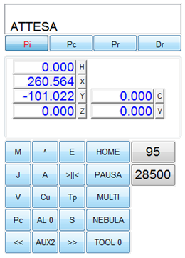
Mostra un quadro riepilogativo dello stato del CN, delle posizioni degli assi e delle velocità correnti degli assi e della fresa. Può essere usato in alternativa al telecomando multifunzione.
mostra le posizioni iniziali degli assi; se il CN è nello stato di attesa, permette di modificare la posizione iniziale; se il CN è in lavorazione, mostra le posizioni iniziali eventualmente modificate dalla lavorazione ma non permette alcuna modifica |
|
mostra le posizioni correnti degli assi |
|
mostra le posizioni correnti degli assi relativamente alle loro posizioni iniziali |
|
mostra la distanza corrente degli assi dal prossimo punto |
|
Il pulsante ha tre differenti funzioni: per iniziare la lavorazione (Start), per arrestare la lavorazione in corso (Stop), per riportare gli assi nella posizione zero (Home) |
|
comanda la sospensione temporanea della lavorazione. Il CN solleva l’asse Z a inizio corsa e arresta la fresa. Lo stesso pulsante permette di riprendere la lavorazione esattamente dal punto in cui era stata sospesa |
|
comanda la ripetizione continua della lavorazione; mostra a fianco un contatore che viene incrementato alla fine di ogni lavorazione |
|
permette di impostare la nebulizzazione; non usare in caso di mandrino multiplo |
|
numero dell’utensile in uso; clic sul pulsante per accedere ai parametri del cambio utensile o del multi-mandrino |
|
numero dell’allineamento lastre in uso; ; clic sul pulsante per modificare questo parametro |
|
velocità corrente di lavoro degli assi XY in mm/sec; clic sull’indicatore per accedere al controllo delle velocità |
|
velocità di rotazione della fresa in rotazioni per minuto (rpm); clic sull’indicatore per accedere ai parametri della fresa |
|
sempre accessibile; propone il menù principale che si può scorrere con [^] e confermare con [E]. Nello stato di jog, propone il menù jog. |
|
Se è visibile un menù permette di scorrerlo; nello stato di jog cambia l’asse selezionato; in vista [Pc] cambia l’asse |
|
conferma la selezione della voce corrente di menù; cancella un eventuale messaggio di allarme |
|
accessibile solo nello stato di ATTESA o di ALLARME; entra ed esce da jog proponendo la posizione corrente e quella con offset iniziale dell’asse X |
|
accessibile solo nello stato di jog; aggiorna la posizione iniziale dell’asse selezionato, visualizza un messaggio e torna a visualizzare la posizione corrente dell’asse selezionato |
|
aggiorna il valore di movimento minimo, visualizza il valore e torna a visualizzare la posizione corrente dell’asse selezionato |
|
sempre accessibile; visualizza la velocità corrente degli assi, la percentuale e la velocità della fresa e ne permette la modifica con il volantino |
|
accessibile solo nello stato di jog; visualizza lo stato del magazzino; accetta il comando [M] per visualizzare il menu del cambio utensile |
|
accessibile solo nello stato di jog; attiva la procedura di preset e torna alla vista della posizione corrente dell’asse Z |
|
sempre accessibile; nello stato di jog visualizza la posizione corrente e quella con offset iniziale dell’asse selezionato; nello stato di RUN, visualizza la posizione corrente dell’asse X; accetta il comando [^] per cambiare asse; nello stato di RUN, accetta la contemporanea variazione della velocità assi con il volantino |
|
nello stato di jog, accende e spegne la fresa |
|
|
nello stato di jog, muove l’asse selezionato |
Permette di abilitare o disabilitare uno dei seguenti controlli:
Controllo azionamenti |
Gli assi sono elencati secondo quanto indicato nella Configurazione Assi |
|
Abilita il controllo |
Si |
Abilita o disabilita il controllo degli azionamenti per tutti gli assi |
Asse X |
Si |
Controllo dell'azionamento per l'asse X |
Asse Y |
Si |
Controllo dell'azionamento per l'asse Y |
Asse Z |
Si |
Controllo dell'azionamento per l'asse Z |
Asse A |
Si |
Controllo dell'azionamento per l'asse A |
Asse B |
Si |
Controllo dell'azionamento per l'asse B |
Asse C |
Si |
Controllo dell'azionamento per l'asse C |
Asse V |
Si |
Controllo dell'azionamento per l'asse V |
Asse W |
Si |
Controllo dell'azionamento per l'asse W |
Asse U |
Si |
Controllo dell'azionamento per l'asse U |
Controllo encoder |
Si |
Abilita il controllo encoder per tutti gli assi |
Sicurezza |
L’Allarme Sicurezza segnala una condizione di pericolo da ripari mobili o dai pulsanti di emergenza. |
|
Allarme Sicurezza da PLC |
Si |
Inverte il segnale di Allarme Sicurezza |
Controllo fresa |
||
Inverter |
Si |
Controllo dell'azionamento fresa |
Flusso di condizionamento |
Si |
Controllo del flusso del liquido di condizionamento |
Livello condizionamento |
Si |
Controllo del livello del liquido di condizionamento |
Temperatura condizionamento |
Si |
Controllo della temperatura del liquido di condizionamento |
Livello liquido spray |
Si |
Controllo del livello del liquido per la nebulizzazione |
Verifica impianto |
||
Pressione impianto |
Si |
Controllo della pressione nell'impianto dell'aria compressa |
Perdita del vuoto |
Si |
Controllo della perdita del vuoto nell'impianto |
Controllo temperature |
Solo per elettronica FDC |
|
temperatura Intervento chiller |
25 |
Valore della temperatura di condizionamento mandrino per intervento compressore |
temperatura allarme chiller |
35 |
Valore di allarme della temperatura di condizionamento mandrino |
temperatura Intervento armadio |
35 |
Valore della temperatura nell'armadio per intervento ventola |
temperatura allarme armadio |
45 |
Valore di allarme della temperatura nell'armadio |
Alimentatore lastra |
||
Controllo presenza lastra |
Si |
Abilita il controllo della presenza lastra |
Controllo rulli |
No |
Abilita il movimento rulli nell'avanzamento lastra |
Per coordinare il corretto posizionamento degli assi è indispensabile specificare l’ordine di movimentazione di ogni singolo asse nelle fasi di Home, di cambio utensile e di preset utensile.
Per ciascuna delle tre fasi, indicate la sequenza come segue: [Z+XY+AB]
dove le parentesi [ e ] indicano l’inizio e la fine della sequenza,
Z,X,Y,A,B indicano gli assi,
+ separatore.
Home |
||
sequenza di Home HW |
[Z+XY+AB] |
indica l'ordine di ritorno a zero degli assi |
sequenza di Home SW |
Non usata |
|
Preset utensile |
||
sequenza di preset |
[Z+XY+AB] |
indica l'ordine di movimento degli assi per il preset |
posizione asse A |
posizione assoluta dell'asse A prima di eseguire il preset |
|
posizione asse B |
posizione assoluta dell'asse B prima di eseguire il preset |
|
Cambio utensile |
||
sequenza di cambio utensile |
[Z+XY+AB] |
indica l'ordine di movimento degli assi per il cambio utensile; indicare con M l’apertura del magazzino utensili, e con W l’eventuale attesa della completa apertura del magazzino. |
muovere asse A |
No |
indica se l'asse A deve essere mosso prima del cambio utensile |
posizione asse A |
0.000 |
posizione assoluta dell'asse A prima di eseguire il cambio utensile |
muovere asse B |
No |
indica se l'asse B deve essere mosso prima del cambio utensile |
posizione asse B |
0.000 |
posizione assoluta dell'asse B prima di eseguire il cambio utensile |
Esegue un controllo tra i parametri ricevuti dal CN e quelli registrati nel file utente, segnalando in una lista il gruppo dei parametri che risultano diversi. Fare doppio clic sulla voce riportata nella lista, per accedere direttamente al gruppo di parametri.
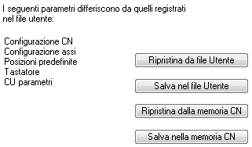
Fare clic sul pulsante per inviare al CN tutti i parametri registrati nel file utente; non viene eseguito il salvataggio nella memoria permanente del CN.
Fare clic sul pulsante per salvare tutti i parametri del CN nel file utente.
Fare clic sul pulsante ; invia al CN un comando per il ripristino di tutti i parametri registrati nella sua memoria permanente.
Fare clic sul pulsante ; invia al CN un comando per il salvataggio di tutti i parametri correnti nella sua memoria permanente.
Legge ed eventualmente modifica degli stati della macchina.
Deve essere usata solo da personale esperto addetto all’assistenza.
Opzioni CN |
|||
modalità operatore |
Si |
Imposta i menu del CN in forma ridotta |
|
disabilita volantino |
No |
disabilita l'uso del volantino nel terminale multifunzione |
|
velocità in sec. |
Si |
Imposta le velocità degli assi in mm al secondo |
|
salva sempre pos. iniziali |
No |
salvataggio automatico della posizione iniziale degli assi |
|
disabilita warm-up |
No |
disabilita la procedura di Warm-up del mandrino |
|
ripristino pos. assi |
No |
abilita il ripristino della posizione assi |
|
disabilita T da volantino |
No |
disabilita la selezione della torretta T da volantino |
|
mappatura assi |
No |
abilita la mappatura degli assi |
|
salva parametri su flash e su disco |
No |
abilita la registrazione dei parametri su disco e su CN |
|
Lingua |
Italiano |
imposta la lingua dei messaggi nel CN |
|
Filtro vibrazioni |
No |
Abilita il filtro vibrazioni |
|
Laser esterno |
No |
Imposta l’uso del laser esterno |
Gruppo mandrino |
||
mandrino con cambio utensile |
Si |
mandrino singolo con cambio utensile automatico |
multi mandrino pneumatico |
No |
mandrino multiplo pneumatico senza cambio utensile |
multi mandrino |
No |
mandrino multiplo senza cambio utensile |
mono mandrino |
No |
mandrino singolo senza cambio utensile |
Magazzino utensili |
||
atc standard (7 pos) |
Si |
magazzino utensili con rastrelliera in linea a 7 posizioni |
atc GS (10 pos) |
No |
magazzino utensili con rastrelliera doppia a 5+5 posizioni "gold" |
atc DS (10 pos) |
No |
magazzino utensili con rastrelliera doppia a 5+5 posizioni "dental" |
Gruppo utensili speciali |
||
diamantatrice cambio utensile |
Si |
diamantatrice con cambio diamante automatico |
diamantatrice a rotella A |
No |
diamantatrice standard con diamante singolo a rotella su asse A |
diamantatrice a rotella B |
No |
diamantatrice standard con diamante singolo a rotella su asse B |
movimento lama |
No |
movimento lama |
Accessori |
||
pompa a vuoto |
Si |
Indica la presenza della pompa a vuoto |
tastatore |
Si |
Indica la presenza del tastatore |
satinatrice |
Si |
Indica la presenza della satinatrice |
guillocher |
No |
Indica la presenza della guillocher |
alimentatore lastra |
Si |
Indica la presenza dell'alimentatore lastra |
alimentatore lastra 2 |
No |
Indica la presenza dell'alimentatore lastra tipo 2 |
alimentatore lastra 3 |
No |
Indica la presenza dell'alimentatore lastra tipo 3 con trascinamento a rulli |
cambio anelli |
No |
Indica la presenza del cambio anelli automatico |
lavorazione tubo |
No |
Indica la presenza della lavorazione tubo |
controllo morse |
No |
Indica la presenza del controllo morse |
tavola rotante |
No |
Indica la presenza della tavola rotante |
morse pneumatiche |
No |
Indica la presenza delle morse pneumatiche |
sensore a forcella |
No |
Indica la presenza del sensore a forcella |
marcatura laser |
No |
Indica la presenza del marcatore laser (solo con CN versione G) |
Luxottica |
||
intestatrice F1 TRS |
No |
|
intestatrice F9 |
No |
Permette di configurare gli assi controllati dal CN.
Configurazione asse |
||
Selezione asse |
X |
Indicare uno degli assi XYZABCVW |
Tipo asse |
Indica se l’asse selezionato è lineare o di rotazione. Per un asse di rotazione forza a 360 il passo vite. |
|
Presenza asse |
Si |
abilita il controllo dell'asse selezionato |
Limiti |
||
Limite inferiore |
0.000 |
limite inferiore della corsa dell'asse |
Limite superiore |
385.000 |
limite superiore della corsa dell'asse |
Parametri |
||
tipo di motore |
0 |
tipo di motore |
velocità max. in mm/sec |
500 |
velocità max. consentita per l'asse selezionato in mm/sec |
accelerazione max. in mm/sec2 |
900 |
accelerazione max. consentita per l'asse selezionato in mm/sec2 |
numero di impulsi/giro |
5000 |
numero di impulsi necessari per un giro completo del motore |
passo della vite |
10 |
avanzamento della posizione lungo l’asse selezionato per un giro del motore |
rapporto di riduzione |
1 |
rapporto di riduzione |
direzione asse |
1 |
direzione asse |
Encoder |
||
presenza encoder |
Si |
presenza encoder |
numero di impulsi/giro |
2250 |
numero di impulsi encoder per un giro completo del motore |
direzione encoder |
1 |
direzione encoder |
errore di inseguimento |
300 |
errore di inseguimento in micron |
zero encoder |
Si |
abilita l'azzeramento dell'asse sullo zero dell'encoder |
zero solo su encoder |
No |
abilita l'azzeramento dell'asse SOLO sullo zero dell'encoder |
distanza zero encoder |
1.753 |
distanza da recuperare dopo l’azzeramento sullo zero encoder |
informazioni |
Le informazioni che seguono non sono modificabili e dipendono dai parametri impostati sopra, |
|
Massima corsa asse mm o gradi |
||
Risoluzione in mm o gradi |
||
Risoluzione encoder in mm o gradi |
||
Massima velocità asse in mm/sec o gradi/sec |
aggiornamento del firmware del CN. Seguire questa procedura:
Nel caso di più macchine collegate allo stesso computer, permette di cambiare il collegamento con Skipper, o di modificare il nome di una macchina collegata.
Avvertenze:
Per collegarsi ad un’altra macchina, selezionare la macchina dall’elenco proposto e comandare Connetti.
La barra del titolo della finestra principale di Skipper deve mostrare il nome della macchina collegata.
Per cambiare il nome di una macchina, selezionare la macchina dall’elenco proposto e comandare Rinomina.
Viene richiesto di indicare il nuovo nome e di comandare OK.
Avvertenze:
Per problemi di assistenza tecnica sulla macchina, è possibile utilizzare questa funzione che permette di conoscere lo stato di tutte le variabili del programma di controllo.
Deve essere usata solo da personale esperto addetto all’assistenza.
I moduli plugin sono DLL fornite separatamente al programma per implementare funzionalità specifiche
L’interfacciamento tra l’ambiente di controllo Skipper e il robot Yumi viene fornito come plugin di estensione di Skipper. Il plugin arricchisce il programma di due funzionalità:
Dal pannello HMI si ha accesso all’archivio delle ricette e a strumenti rapidi per il controllo del ciclo robot: l’avvio, l’arresto e la ripartenza. È inoltre visualizzato il log di sistema di Yumi per avere un rapido riscontro di eventuali segnalazioni. La comunicazione tra Skipper e robot viene effettuata attraverso la sua interfaccia Robot Web Services 2.0 API, pertanto è necessario predisporre una connessione ethernet tra il PC e la rete pubblica del controller.
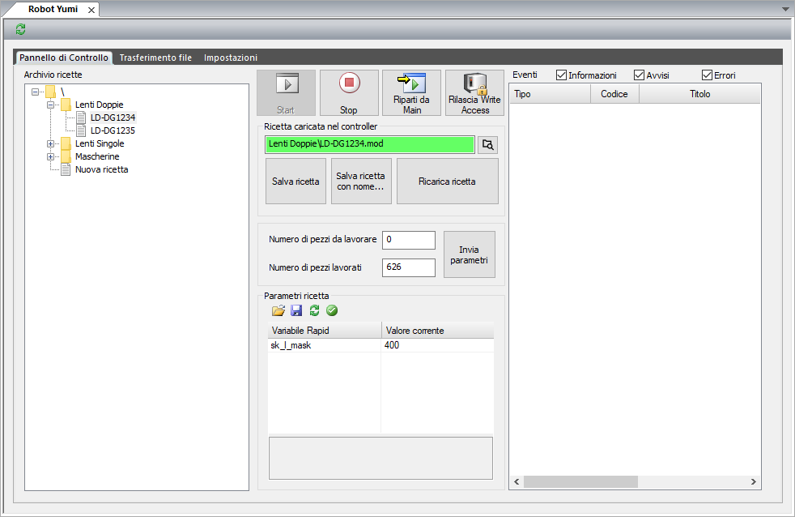
Il programma robot è organizzato in due parti, una statica e una dinamica.
La parte statica è permanentemente caricata in RAPID e definisce l’insieme di tutte le funzionalità disponibili del robot: tutte le sequenze di prelievo e deposito implementabili, procedure di homing, ecc. Il ciclo robot è definito dalla scelta delle sequenze da richiamare sulla base del valore di variabili e parametri, tramite le quali è possibile configurare il tipo di lente o mascherina da caricare. A loro volta le varie sequenze sono funzione di punti e offset configurabili, in modo da essere adattabili alle diverse esigenze. La parte statica del programma è quindi realizzata per essere indipendente dall’hardware del robot e pertanto può essere mantenuta uguale.
La parte dinamica, che costituisce la ricetta vera e propria, è il modulo RECIPE. In esso sono definite tutte le variabili, i robtargets e gli offset che consentono di personalizzare e specificare il flusso del programma statico. Tutte le possibili variazioni di modello, di prelievo, deposito e caricamento devono essere realizzabili tramite l’opportuna modifica delle variabili definite nel modulo RECIPE.
L’insieme dei salvataggi su file .mod delle varie implementazioni del modulo RECIPE, costituisce l’archivio delle ricette. Ciascuna ricetta, quindi, altro non è che UN file .mod che definisce una particolare istanza del modulo RECIPE.
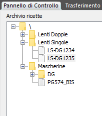
Nelle impostazioni del pannello Robot Yumi, in Skipper, viene definita la posizione della cartella dell’archivio ricette, che può trovarsi sul PC o su unità di rete condivisa. La posizione di default dell’archivio ricette è la sottocartella YumiRecipes del percorso di installazione di Skipper. A partire da questa posizione il programma effettua una ricerca di file .mod e sottocartelle creando un albero di ricette navigabile e modificabile direttamente da programma. L’archivio ricette organizzato a file consente una rapida copia da un PC all’altro, la creazione, cancellazione, cambio di nome dei file mod e delle cartelle si ripercuote immediatamente in una variazione della struttura dell’archivio, senza necessità di operazioni ulteriori da parte dell’operatore. Un secondo archivio, di default ricercato nella sottocartella YumiTemplates, definisce i modelli base da utilizzare per la creazione di nuove ricette. Facendo click sul pulsante di aggiornamento, visibile nella parte alta del pannello, viene effettuata una procedura globale di aggiornamento dello stato: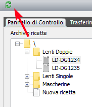
La creazione di una nuova ricetta può essere effettuata in tre modi:
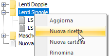
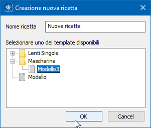
La modifica di una ricetta può essere effettuata tramite gli strumenti messi a disposizione da ABB, Flex Pendant o Robot Studio. Come indicato nel primo paragrafo, l’unico modulo modificabile per la differenziazione di una ricetta è il modulo RECIPE! Pertanto, per effettuare modifiche, è necessario innanzi tutto caricare la ricetta di interesse nel controller. Per rendere permanenti le modifiche effettuate si possono utilizzare i pulsanti Salva ricetta e Salva ricetta con nome…: il primo effettua il download dal robot della ricetta corrente e la sua sovrascrittura nell’archivio; il secondo crea invece una nuova ricetta a partire dalle modifiche effettuate. La ricetta originale risulterà invariata.
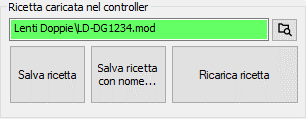
Per cancellare una ricetta si può fare utilizzare l’apposita funzione del menu visualizzato facendo click con il tasto destro, oppure cancellare direttamente il file dalla cartella dell’archivio
Le ricette possono essere caricate nel controller del robot in più modi:
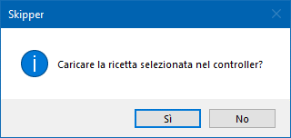
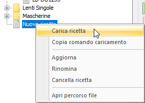
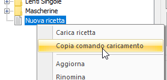
quindi incollando il testo in un blocco iso posto in cima alla lista percorsi
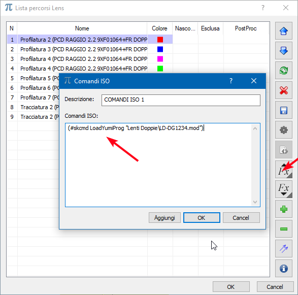
Il comando di caricamento viene interpretato in fase di invio diretto o caricamento del file cnc.
Per consentire il settaggio fine di alcune impostazioni, o contemplare una naturale variabilità delle lenti, è stato predisposto un meccanismo per presentare in Skipper alcune variabili di interesse della ricetta. Tutte le variabili presenti nel modulo RECIPE che iniziano con il prefisso sk_ vengono visualizzate e sono modificabili nel pannello Parametri della ricetta. Modificando il valore di una variabile questa cambia di colore rispettando la convenzione utilizzata in Skipper per tutti i parametri
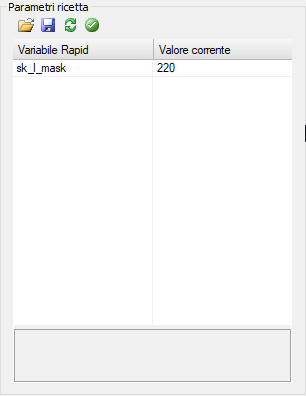
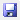
per salvare il valore modifica in maniera permanente: viene modificato il valore iniziale della variabile e, se confermato nel messaggio di richiesta, salvata la ricetta in archivio.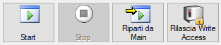
Consente di avviare, fermare, riavviare il ciclo robot. Tramite il pulsante Rilascia Write Access Skipper effettua il rilascio, qualora l’abbia acquisito, del controllo in scrittura sul robot, consentendo la connessione ad altri software, come Robot Studio
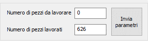
Il numero di pezzi da lavorare viene impostato come contatore cicli della macchina CN. Impostando il Numero di pezzi da lavorare a 0, la macchina effettuare un numero illimitato di cicli, fin quanto il robot sarà in grado di servirla. Valori diversi da 0 comportano un numero di cicli necessario a portare il contatore Numero di pezzi lavorati ad un valore maggiore o uguale a Numero di pezzi da lavorare. In qualsiasi momento è possibile modificare i valori dei contatori e inviarli alla macchina premendo il pulsante Invia parametri
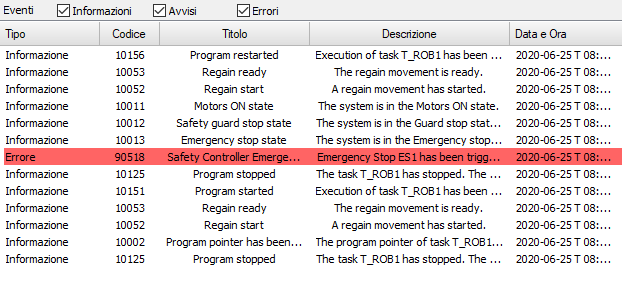
Riporta il registro degli eventi, accessibile anche da Flex Pendant
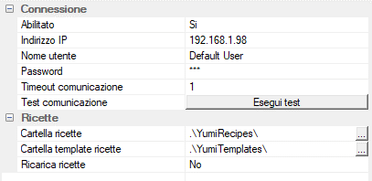
Da qui è possibile modificare i parametri di connessione al robot e la posizione dell’archivio ricette. Tutti i valori, a parte l’indirizzo IP per la connessione, sono già inizializzati ai valori di default.
Abilitato: abilita o disabilita l’interfaccia di comunicazione con Yumi. Può essere utilizzato per disabilitare temporaneamente la comunicazione con il robot in caso di guasto o non utilizzo, allo scopo di evitare la segnalazione di errori di comunicazione ad ogni avvio del programma
Indirizzo IP: indirizzo IP del controller del robot
Nome utente: nome utente da utilizzare per la connessione al robot. Il nome utente di default è Default User
Password: password da utilizzare per la connessione al robot. La password di default è robotics
Timeout comunicazione: tempo in secondi oltre il quale vengono interrotti i tentativi di comunicazione con il robot
Test comunicazione: effettua un test di comunicazione ritornando l’esito dell’operazione
Cartella ricette: percorso alla cartella nella quale vengono ricercate le ricette da visualizzare nell’archivio. Può essere un percorso assoluto o relativo alla cartella di installazione di Skipper. La posizione predefinita della cartella è .\YumiRecipes, posta all’interno della cartella di installazione di Skipper
Cartella template ricette: percorso alla cartella nella quale vengono ricercate le ricette da visualizzare nell’elenco dei template. Può essere un percorso assoluto o relativo alla cartella di installazione di Skipper. La posizione predefinita della cartella è .\YumiTemplates, posta all’interno della cartella di installazione di Skipper
Ricarica ricette: opzione che viene utilizzata durante il caricamento automatico delle ricette da file cnc. Qualora la ricetta da caricare sia già presente nel robot, specifica se questa debba essere ricaricata, con conseguente riavvio del ciclo, oppure no